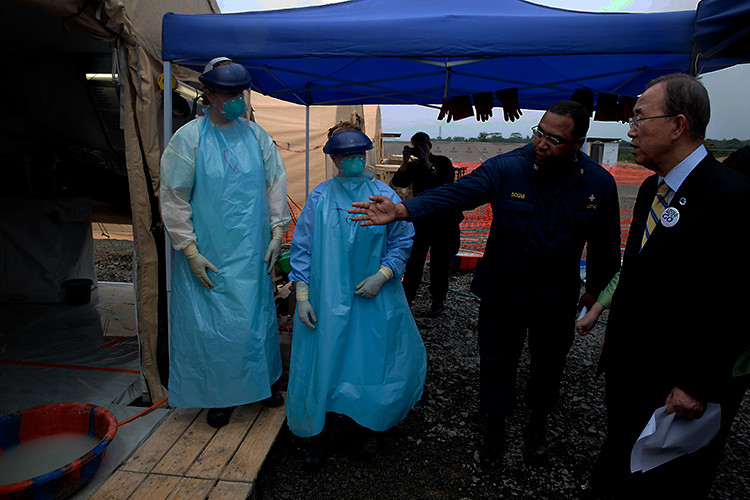

In 2014, an unprecedented outbreak of the Ebola virus devastated the populations and economies in West Africa. Despite efforts by the United Nations and its partners to bolster government response to the emergency, the epidemic affected more than 27,000 people, killing more than 11,000 – mostly in Guinea, Liberia and Sierra Leone – and eroded achievements in the areas of peace and development, disrupted health, education and social services, and set back major economic sectors such as agriculture, mining, trade and tourism. In July 2015, Secretary-General Ban Ki-moon convened an international conference to help mobilize resources to support affected countries on their path to recovery.
Shown In 2014, the UN chief visits an Ebola treatment facility in Monrovia, Liberia, operated by the United States. UN Photo/Evan Schneider
